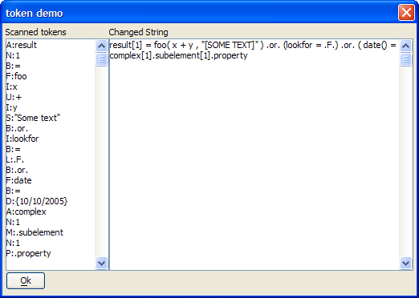

<StringScanner>.ScanToToken()
Syntax
Text as C = <StringScanner>.ScanToToken( Kind as C )
|
Argument |
Description |
|
Text |
The text between the starting and ending offset positions. |
|
Kind |
The type of token to find. The value of this argument can be a combination of the following flags.
|
Description
The <StringScanner>.ScanToToken() function moves the offset to the beginning of the token.
Examples
|
dim t as C t = <<%txt% result[1] = foo( x + y , "Some text" ) .or. (lookfor = .F.) .or. ( date()= {10/10/2005} complex[1].subelement[1].property %txt% scanner = stringscanner.create(t) ' find the first line with a logical operator ? scanner.SkipToToken("L") = .T. ? scanner.GetToOffset() = result[1] = foo( x + y , "Some text" ) .or. (lookfor = ? scanner.GetRemainder() = .F.) .or. ( date()= {10/10/2005} complex[1].subelement[1].property ' find the first line with a property of array ? scanner.SkipToToken("P") = .T. ? scanner.GetLineText() = "complex[1].subelement[1].property" |
The following script produces the dialog shown below.
|
dim t as C dim all as C t = <<%txt% result[1] = foo( x + y , "Some text" ) .or. (lookfor = .F.) .or. ( date()= {10/10/2005} complex[1].subelement[1].property %txt% scanner = stringscanner.create(t) all = "" while scanner.SkipToToken("*") all = all + scanner.ScanTypedToken("*") + crlf() end while scanner.Offset = 1 while scanner.SkipToToken("S") saveOffset = scanner.Offset oldString = unquote(scanner.ScanOverToken("S")) newOffset = scanner.Offset scanner.Offset = saveOffset scanner.Replace(quote("["+upper(oldString)+"]"),newOffset-saveOffset) end while result = scanner.Text ui_dlg_box("token demo",<<%dlg% Scanned tokens|Changed String; [%M%.25,22all]|[%M%.75,22result]; <&Ok> %dlg%) |

See Also